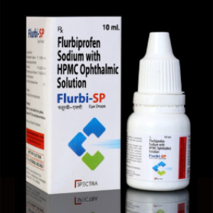
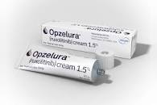
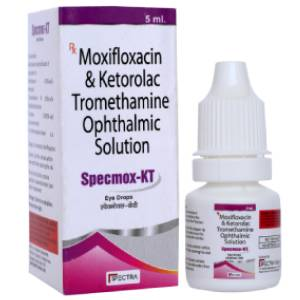
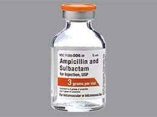
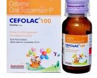

Nepa-SP is made up of the molecules found in Nepafenac Eye Drops, a type of non-steroidal anti-inflammatory medicine (NSAID) used to treat post-operative eye discomfort and inflammation. The use of nepafenac ophthalmic suspension helps to prevent the release of specific chemical messengers that cause discomfort and inflammation in the eye, such as redness and swelling.
RS:147
Rs:160
2

Flurbi-SP is a combination of flurbiprofen and HPMC ophthalmic solution that is used to prevent or decrease abnormalities in the eye caused by cataract removal and eye surgery. This eye drop prevents the pupil, which is the inner part of the eye, from narrowing. It allows a doctor to examine the eye from the inside while doing surgery or changing the lens. The ingredient Hydroxypropyl Methylcellulose (HPMC) is used to alleviate dryness and irritation. It aids in the prevention of eye damage in certain eye conditions.
RS:145
Rs:155
3

The two most successful drugs, Moxifloxacin and Ketorolac Eye Drops are combined in Specmox-KT Eye Drops, making them a highly effective eye therapy. Moxifloxacin eye drops are a 4th generation antibiotic, whilst Ketorolac eye drops are an anti-inflammatory medication. Ketorolac and Moxifloxacin Eye Drops are used to treat bacterial infections in the eyes. The drug works by preventing the production of chemical messengers that produce discomfort and inflammation in the afflicted eye.
Rs:14,821.82
Rs:14,900
4

The two most successful drugs, Moxifloxacin and Ketorolac Eye Drops are combined in Specmox-KT Eye Drops, making them a highly effective eye therapy. Moxifloxacin eye drops are a 4th generation antibiotic, whilst Ketorolac eye drops are an anti-inflammatory medication. Ketorolac and Moxifloxacin Eye Drops are used to treat bacterial infections in the eyes. The drug works by preventing the production of chemical messengers that produce discomfort and inflammation in the afflicted eye.
RS:214
Rs:240
5

It is a injection medicine.The combination of ampicillin and sulbactam injection is used to treat certain infections caused by bacteria, including infections of the skin, female reproductive organs, and abdomen (stomach area). Ampicillin is in a class of medications called penicillin-like antibiotics. It works by stopping the growth of bacteria. Sulbactam is in a class of medications called beta-lactamase inhibitors. It works by preventing bacteria from destroying ampicillin.
RS:125.00
Rs:150.00
6

Cephalosporins are beta-lactam antimicrobials used to manage a wide range of infections from gram-positive and gram-negative bacteria. The five generations of cephalosporins are useful against skin infection, resistant bacteria, meningitis, and other infections.